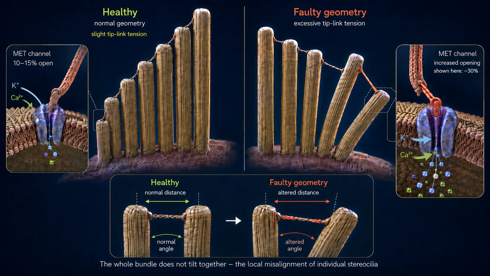
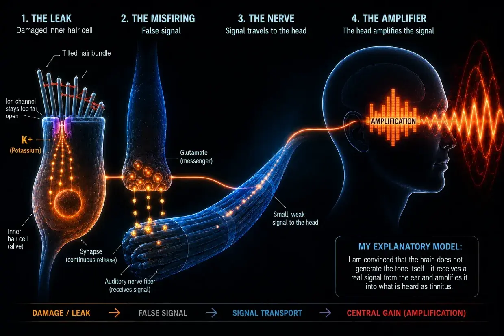

Noise-Induced Tinnitus—When the Ear Reaches Its Limits
Last updated: June 2026
This is my own explanation, based on years of research and on having overcome tinnitus twice myself—not a standard medical explanation.
I, too, was affected by this extreme condition back then—as I have already recounted in my biography.
I was so desperate that I swore to myself: Either the tinnitus goes, or I go. (Of course, I did not mean it quite that seriously, but I really was under immense pressure.)
What I experienced back then was mainly a loud, piercing, high-frequency tone in my left ear, accompanied by a rushing sound far in the background. It was the worst thing I could imagine at that point. To make matters worse, later instructions from doctors—instructions that proved completely wrong for me personally—made the faint tone that was already present in my right ear by day 3 much worse.
Those “instructions” essentially amounted to masking the tone with more sound—for example, by listening to music through headphones at a higher volume or by playing noise continuously. In reality, however, that meant my ears were being exposed to even more sound even though they were already massively overloaded. Looking back, that was one of my biggest mistakes, because it made my condition worse and markedly intensified the faint tone already present in my right ear.
The sound was like a constant assault on my nerves, my sleep, and my entire life. Doctors told me I had to learn to live with it. Online, I found therapies that contradicted one another. To me, it all sounded like everyone was at a loss.
So I swore to myself: This can’t be all there is. I began researching like a man possessed, reading studies, comparing firsthand accounts, and piecing together my own picture. Gradually, a clear mechanism emerged—a picture that made sense to me and was later confirmed by my own experiences.
Today I can say this: noise-induced tinnitus is not a mystery. It is the result of the ear being overloaded—and when people understand what is happening there, they also understand why the sound is there and what they can do themselves.
Short version Read in 60 seconds—the essentials at a glance
At extreme volume (e.g., in a club), the pumps simply can no longer keep up. The cell’s energy use (ATP consumption) explodes, the cell can no longer replenish its energy supply, and it switches to a messy emergency mode that produces lactic acid and makes the cellular environment more acidic—a downward spiral similar to muscle failure during a sprint. When the pumps can no longer keep up, calcium builds up inside the tiny sensory hairs. This excess calcium activates breakdown enzymes (calpains) that eat away at the “glue” (crosslinkers) between the hair’s internal structural filaments. Without this glue, the hair loses its stiffness and deforms. As a result, the ion channel at its tip remains permanently too far open—like a window left tilted open. Potassium constantly flows in through this permanent leak, keeping the entire cell at a constant voltage. This voltage opens further channels in the inner hair cell itself, through which calcium trickles to the synapse and triggers an uninterrupted release of glutamate onto the auditory nerve. The brain receives this faint but constant false signal, detects that the normal input is missing in this frequency range, and turns its internal preamplifier (central gain) up extremely high. Only this amplification turns the subtle false signal into the consciously perceived tone—tinnitus.
The good news: As long as the cell is alive, it has the blueprint and the capacity for repair. It needs energy, building blocks, and rest.
What Really Happens in the Ear: The Physiology of Normal Hearing
Before we dive in, here is a quick clarification of terms so that we understand one another correctly throughout this page: the inner ear contains what are known as hair cells—the actual sensory cells for hearing. On the surface of each individual hair cell is a bundle of tiny, finger-like projections—the stereocilia. Depending on its position in the cochlea, each hair cell has about 50–300 of them, arranged in rows from short to long like organ pipes. Each individual stereocilium has its own internal support framework made of actin proteins. In everyday language and in research, these stereocilia are often simply called “hairs” or “sensory hairs”—and that is exactly how I use the term on this page. The important point is this: when I speak of “hairs,” I always mean the stereocilia on the hair cell, not the hair cell itself.
Normally, hearing proceeds as a highly precise chain reaction:
The impulse: A sound stimulus strikes the fine hairs (stereocilia) of the hair cells and bends them to the side.
The mechanical pull (tip links): Because the tips of these hairs are connected to one another by extremely fine protein filaments (tip links), bending them creates tension. These filaments work like a mechanical pull cord: they physically pull open the ion channel at the tip—much like pulling up a bathtub drain plug.
The influx: Because the inner ear is filled with a potassium-rich fluid, potassium (K+) immediately flows through this now-open channel into the sensory hair—along with small amounts of calcium.
Activation: This influx of potassium changes the hair cell’s electrical voltage (depolarization). This, in turn, opens calcium channels farther down in the hair cell itself—not in the sensory hairs, but in the cell body below.
The signal: Only this incoming calcium causes the inner hair cell to release the neurotransmitters that send the signal along the auditory nerve to the brain.
The reset: Specialized transporters—both in the sensory hairs and in the hair cell body—then pump the excess potassium and calcium back out with the help of ATP (cellular energy), allowing the cell to settle down again.
This system is designed around a continuous, gentle “in-and-out” rhythm—like breathing. The crucial point is this: at rest, the channel at the tip of the hair is not completely closed but always open a tiny bit—that is normal and intentional, so the cell can respond instantly to even the faintest sound. As long as the hair stands upright, this opening remains minimal and controlled. But if the hair stays tilted to the side, the channel remains far too wide open—and that is exactly what becomes a problem.
Before we look at what happens when this system is overloaded, there is one important point to consider: when chronic tinnitus develops after noise trauma, many people affected by it think—and many doctors give the same impression—that the hair cells in the ear have been irreversibly destroyed and the brain now produces the tone on its own from memory. I am convinced that this falls short. A dead inner hair cell no longer sends a signal—it is silent. Precisely because the tone IS THERE, the inner hair cell must still be alive. Tinnitus is not the sign of a dead inner hair cell but the sign of an inner hair cell locked in a fight for survival. Some individual hair cells may indeed be permanently lost as a result of noise damage—but as I understand it, they play no role in the tinnitus process, because no signal comes from them anymore. The tone comes from the inner hair cells that are still there and fighting—and they are stuck in a state of energy-related dysfunction.
What follows is a detailed, step-by-step explanation of this loss of function. Anyone who would prefer a more compact version will find a summary farther up this page.
When the Noise Gets Too Loud (What Happens During a Night at a Club)
But if too much sound hits all at once or continuously (chronically), the balance tips and the mechanics fail. Not every night at a club leads to this—but when noise-induced tinnitus develops, I am convinced that this is precisely the mechanism behind it: a cascade of energy loss, mechanical collapse, and chemical flooding—three processes that fuel one another and end in a vicious cycle.
- 01Energy Collapse
- 02Mechanical Collapse
- 03Emergency Rescue & Hamster Wheel
Stage 1: the energy collapse
Let’s recall the normal hearing process: with every sound stimulus, ions flow into the cell and then have to be pumped back out using ATP. At normal volume, this is a relaxed rhythm—the cell pumps away comfortably and has energy to spare. But at 100 decibels in a club, the sound waves pound the hairs continuously and with brutal force. The channels fly open, ions flood in, and the pumps simply can no longer keep up. Energy use explodes.
The hair cells now burn far more energy than they can replenish. The cell’s normal power plants (mitochondria) are running at their limit. To have any chance of meeting this enormous demand for energy, the cell falls back on a faster but messy emergency pathway: anaerobic glycolysis. This emergency mode does provide energy immediately, but it also produces lactic acid (lactate) as a waste product, making the cellular environment more acidic. The enzymes responsible for energy production become less and less efficient because of the acid—a downward spiral.
A comparison with exercise: Everyone knows the feeling from lifting weights or sprinting. After a while, the muscle begins to “burn” (lactate buildup) and eventually simply shuts down—classic muscle failure. That same chemical failure occurs in the inner ear, except that it is felt not as pain but as a loss of function.
And this is where the real danger lies: when the pumps can no longer keep up, calcium accumulates inside the sensory hairs. In small amounts, this calcium is normal and necessary—but in excess, it becomes a destroyer. Stage 2 shows what it destroys and why that is so devastating.
Stage 2: the mechanical collapse
Understanding what the calcium does now requires a basic grasp of how a sensory hair is structured internally: it consists of hundreds of parallel actin filaments, much like a bundle of uncooked spaghetti. These filaments are glued together by short protein bridges known as crosslinkers. These crosslinkers are the hair’s true structural engineers—they hold the bundle together so firmly that it stands rigid like a steel tube, all by itself, without using any energy. As long as the crosslinkers remain intact, the hair stays upright.
The energy loss in Stage 1 now sets off a devastating chain reaction:
The pumps are overwhelmed (calcium flood): As we saw in the normal hearing process, a small amount of calcium always enters the sensory hair along with the potassium. Under normal conditions, that is not a problem—dedicated calcium pumps sit directly in the membrane of the sensory hair and immediately pump this calcium back out. But these pumps also need ATP. During the acute overload in the club, there is nowhere near enough energy—the pumps are quite literally overwhelmed. The result: even the small amounts of calcium that would normally pose no problem now build up inside the hair—and this excessive concentration is exactly what triggers the structural collapse itself.
And now comes the structural collapse itself: The accumulated calcium activates special breakdown enzymes (known as calpains). These enzymes eat away at precisely the crosslinkers we have just discussed—the mortar that holds the bundle together.
A simple picture helps explain why this is so devastating:
Take a single strand of uncooked spaghetti in your hand—you can bend and break it easily. Now take a hundred strands and glue them together into a solid stick with superglue—suddenly you have a rigid tube that is almost impossible to bend. The individual strands are weak, but glued together, they are strong.
That is exactly how the sensory hair works: it is not the actin filaments alone that make it rigid, but the way the crosslinkers bind the filaments together.
When the calpains eat away at this glue, the opposite happens: the rigid tube turns back into individual, loose filaments. The actin filaments are still inside the stereocilium—they are still there, but without the connections between them, they no longer hold together. The hair loses its rigidity, not because something has broken off, but because its internal cohesion is gone.
If the person remains in the club, things often get even worse: under the continuing sound pressure, the now unprotected, freestanding individual filaments can actually break at weak points—like individual strands of spaghetti buckling under strain without the support of their neighbors. And when one filament breaks, the load on the neighboring filaments increases, and they can then break in turn—threatening a cascade effect.
The result: Without its internal support, the hair can no longer hold itself upright—it deforms. The following picture helps show what that means: the sensory hairs stand in rows beside one another, are of different lengths, and are connected at their tips by fine filaments (tip links). In a healthy state, all the hairs stand perfectly upright—the filaments between them have exactly the right tension, and the channel is only minimally open at rest. When a sound wave arrives, the hairs briefly tilt to the side, the filaments tighten, and the channel opens—and as soon as the wave has passed, they tilt back and everything relaxes. A clean opening-and-closing cycle.
Now imagine those same hairs no longer standing upright but hanging at an angle—even when NO wave is coming. The filaments between them are permanently under a different tension than intended. At the same time, the membrane is distorted as well. This leaves the channel too far open even at rest. From that point on, potassium and calcium flow into the cell constantly and uncontrollably, even though the music stopped long ago. The permanent leak has formed—and with it, the foundation for tinnitus. The inner hair cell fires a signal even though no sound is present—because the geometry is no longer right.

For most people affected, tinnitus begins relatively soon after the noise event—within minutes to a few hours. There are also cases, however, in which tinnitus does not appear until hours or even days later. I explain in detail in the FAQ section why the timing can vary so much and what role certain structures in the ear play.
Stage 3: the emergency rescue—and why it is not enough
The cell registers the damage and immediately triggers a survival mechanism: special repair proteins (such as XIRP2), already stored in the cell body as an emergency reserve, race to the damaged areas. If filaments have broken, these proteins wrap themselves around the break sites like molecular duct tape, preventing the filaments (the spaghetti from Stage 2) from breaking all the way through and the cascade from spiraling out of control. This is Phase 1: acute emergency stabilization. The process happens quickly (minutes to hours) because XIRP2 does not need to be produced first—it is simply recruited to the damaged area. The sensory hair survives—but the framework remains soft and unstable, because XIRP2 cannot replace the missing crosslinkers between the filaments.
Now Phase 2 (active remodeling) would absolutely have to begin—and it involves two repair jobs at once: first, the XIRP2 patches would have to be replaced with fresh, intact actin. Second, new crosslinkers would have to be synthesized and inserted between the filaments to glue the bundle back into a solid rod. Both processes consume massive amounts of ATP, both require material from the cell body, and the stereocilia have no power plants (mitochondria) of their own—they depend entirely on energy supplied from below by the hair cell body. But this is precisely where the chronic trap snaps shut in most adults. The next section explains why.
-
01Energy Collapse
ATP use explodes, and the cell switches to emergency mode. Lactic acid builds up, and the environment becomes acidic.
-
02Mechanical Collapse
Excess calcium eats away at the “glue” between the stereocilium’s filaments. The hair deforms—the leak forms.
-
03Emergency Rescue & Hamster Wheel
XIRP2 stabilizes the break sites. The cell survives the acute phase—but there is not enough energy for the actual repair.
The Hamster Wheel Trap: Why Repair Keeps Getting Put Off
Now comes the crucial transition from an acute event to a chronic problem.
As soon as the noise stops, recovery begins: the cell immediately starts producing ATP again, and the pumps work their way back toward normal operation bit by bit. The full regenerative process—breaking down the acid, carrying out repairs, replenishing the energy reserves—then unfolds gradually, especially during sleep. In other words, the body cleans up: the acute flood of ions—which built up both because of the massive exposure in the club and because of the leak that has now formed—is gradually pumped back out. The extremely high ion levels largely return to normal, and the calcium level falls below the critical threshold: the breakdown enzymes (calpains) become inactive, and the active structural damage stops.
But why does the ear still not heal?
Because the permanent leak remains. The stereocilia are still tilted, the ion channel remains permanently too far open, and the pumps have to remove this excess around the clock. The following picture helps explain exactly why that prevents repair:
The roof-house-basement principle
To understand this dilemma at a glance, it helps to picture the hair cell as a building supplied through a single electricity meter (ATP):
The roof: The fine sensory hairs (stereocilia), with their weakened actin frameworks, are stuck in Phase 1 emergency mode. This is where the leak is, and where the rebuilding machinery should actually be at work. Instead, the pumps in the roof itself are constantly occupied with removing the potassium and, above all, the dangerous calcium flowing in—because if the calcium up here rises above the critical threshold again, there is a risk that the breakdown enzymes will become active again and make the damage worse.
The house: This is the large cell body itself—the ONLY place where the power plants (mitochondria) are located and produce ATP for every part of the cell. Excess ions now stream in continuously through the broken roof.
The basement: Ion pumps are at work down here as well, desperately shoveling the calcium that has seeped through back out against the flow, so that the house does not flood completely and the cell does not die.
Because the pumps in both the roof and the basement consume most of the available energy just to keep the building from drowning, the cell has no resources left to send out the construction workers and repair the damage to the actin framework. Repair keeps getting put off. The leak stays open. The pumps toil. The hamster wheel turns.
From the Fight for Survival to the Tone: How Tinnitus Develops

We now know that the permanent leak exists and that the cell is trapped in the hamster wheel. But how does that become an audible tone? The constant influx of potassium keeps the entire inner hair cell at a sustained electrical potential (depolarized)—it never returns to its resting potential. This sustained voltage, in turn, opens voltage-gated calcium channels farther down in the inner hair cell, through which a little calcium now trickles continuously to the synapse. This calcium triggers an uninterrupted, low-level release of the chemical messenger glutamate onto the auditory nerve. The brain receives a constant “FIRE!” signal—even though no sound is present—and translates this chemical short circuit into a sound.
What the Brain Does with It: The Amplifier, Not the Cause
This is where the brain takes the stage. Conventional medicine often claims that the brain has “learned” tinnitus and now produces the tone entirely on its own. I am convinced that this explanation is incomplete. The brain does not create tinnitus out of nothing. It responds as a highly complex processor to the constant, abnormal leak of glutamate from the ear.
Because the noise damage and the tilted hairs mean that the real, clean external signals (the normal frequencies) are missing, the auditory center in the brain enters a state of sensory deprivation. As an evolutionary protective mechanism, the brain responds uncompromisingly: it turns the preamplifier for precisely these missing frequencies up extremely high—the so-called “central gain.” In the wild, this was essential for survival, making it possible to hear the footsteps of a predator creeping up despite damage to the ear. In other words, the brain takes the inherently faint leakage current from the damaged inner hair cells and drives it through a gigantic equalizer. It amplifies the signal into the deafening siren we consciously perceive as tinnitus.
The Fatal Masking Trap: Why Using Noise-Generator Apps Is the Worst Thing to Do
Masking burns through the only repair window your ear still has.
In my experience, this is where people affected by tinnitus—acting on medical advice—make the most serious mistake. The standard recommendation is this: “Mask the tone with white noise, nature sounds, or soft music.” That sounds intuitively logical and really does provide relief in the short term. But as I understand it, it is biochemically disastrous.
One thing has to be clear: the hairs are still alive and active—but they are tilted. The cell is actually trying to use every period of rest (especially during sleep) to repair the structure with the little energy it has left and straighten itself back up.
But when someone keeps exposing their ears to additional sound, they force the damaged stereocilia back into work mode. The stereocilia have to respond to sound again, pump ions, and use precisely the energy they had saved for Phase 2—the actual repair. And there is a second problem: every sound wave makes the actin filaments in the damaged bundle slide against one another. The constant movement shakes newly installed crosslinkers loose again before they can bind properly—like trying to fit a rung into a ladder while someone is shaking it.
In the roof-house-basement picture, the artificial sound exposure keeps battering the already soft roof. The leak remains too far open. The pumps in the basement have to run at their absolute limit 24 hours a day. That leaves zero energy for the construction workers up on the roof.
This explains a phenomenon I experienced myself and that countless other people with tinnitus report: someone masks tinnitus with noise at night and feels better for a short time, but the next morning it is more aggressive and louder than it was the night before. The reason is that the cell burned through its night shift—the only repair window—processing the artificial sound.
An honest word about this: I completely understand why some people can live well with masking. When tinnitus drags someone into a psychological abyss and makes sleep impossible, masking it for a short time can literally be lifesaving—and I do not want to talk anyone in that situation out of it. But for actual regeneration—in other words, for tinnitus to truly disappear again—masking is counterproductive as I understand it. That is the distinction I want to point out.
Hope: Why Repair Is Possible
Despite all these mechanisms, there is one crucial ray of hope: because the cell nucleus remains intact and the actin framework itself is still present, the cell can repair the structure. Stereocilia have active actin turnover—the actin filaments are continuously broken down and rebuilt. In other words, the cell is constantly renewing its own structure. More specifically, in Phase 2 the XIRP2 patches at the filament break sites are replaced with fresh actin, and new crosslinkers are inserted between the filaments until the bundle is firm and rigid again. The question is not whether the cell can repair, but whether it has enough energy and building blocks under the given conditions—and whether it is given the rest it needs.
Even if the internal support structure has collapsed badly, that is not a final verdict. As long as the cell is alive, it has the blueprint and the ability to rebuild this framework—as soon as enough energy (ATP) and building blocks are available again and the chemical stress is stopped.
Interestingly, pharmaceutical research is pursuing this exact principle—increasing cellular energy (ATP)—which supports my explanatory model (even though the ATP/ROS effect has so far only been shown in cell cultures). The drug AC102 targets this very mechanism: in an animal model (gerbils), a tinnitus-like pattern of behavior, measured using the startle reflex (GPIAS)—an accepted behavioral correlate of tinnitus—almost completely subsided over five weeks after a single dose of AC102 (only 1 of 15 animals was still affected at the end vs. a large proportion of the placebo group). A clinical Phase 2 trial is currently underway in humans, with results expected in 2026 (AC102 research on my sources page →). Low-level laser therapy (photobiomodulation) also targets this fundamental energy-based approach.
Conclusion
I am convinced that this is what chronic noise-induced tinnitus really is physiologically: a living inner hair cell trapped in an energy-related emergency mode, with its repair process largely frozen in Phase 1 because it lacks the energy for Phase 2. The ear is not “broken,” and the brain is not imagining a phantom signal. The tone is the result of a real, peripheral fight for survival that the brain merely amplifies.
Whether the tone remains depends solely on whether the cells are helped to close the leak and the pumps are supplied with energy again so that the hair can stand upright again.
So What Can Be Done About Noise-Induced Tinnitus?
Even though the mechanisms are complex, there are three central levers that people should understand right away. On my approach page, I explain in detail what they look like in practice and how, back then, they helped me get rid of my tinnitus completely on two separate occasions.
On the next page, I explain what these three levers look like in practice and how they helped me back then.
The Whole Story in One Chain
According to my explanatory model, what happens during noise trauma can be summarized as one continuous chain:
At extreme volume (e.g., in a club), the pumps simply can no longer keep up. The cell’s energy use (ATP consumption) explodes, the cell can no longer replenish its energy supply, and it switches to a messy emergency mode that produces lactic acid and makes the cellular environment more acidic—a downward spiral similar to muscle failure during a sprint. When the pumps can no longer keep up, calcium builds up inside the tiny sensory hairs. This excess calcium activates breakdown enzymes (calpains) that eat away at the “glue” (crosslinkers) between the hair’s internal structural filaments. Without this glue, the hair loses its stiffness and deforms. As a result, the ion channel at its tip remains permanently too far open—like a window left tilted open. Potassium constantly flows in through this permanent leak, keeping the entire cell at a constant voltage. This voltage opens further channels in the inner hair cell itself, through which calcium trickles to the synapse and triggers an uninterrupted release of glutamate onto the auditory nerve. The brain receives this faint but constant false signal, detects that the normal input is missing in this frequency range, and turns its internal preamplifier (central gain) up extremely high. Only this amplification turns the subtle false signal into the consciously perceived tone—tinnitus.
The tragic part is that the energy level partially recovers after a night at the club, but the pumps use most of that energy simply to manage the permanent leak and keep the cell alive. Nothing remains for the actual repair—producing new crosslinkers and straightening the framework back up. The cell is trapped in the hamster wheel. Whether tinnitus remains temporary or becomes chronic depends on how much glue has been destroyed (a little = repairable, a lot = hamster wheel), whether someone gives their ears rest or keeps exposing them to sound (in my experience, masking with noise makes the situation worse), and whether the body gets enough energy and building blocks. The good news: as long as the cell is alive, it has the blueprint and the capacity for repair—it needs energy, building blocks, and rest.
Further Questions & FAQ
For anyone who would like to go deeper, the FAQ section covers more fascinating questions about noise-induced tinnitus—for example, why its volume can fluctuate, why it briefly becomes quieter when it is masked, and why it becomes louder again shortly afterward. These everyday phenomena are explained there in clear language—based on the same physiological mechanisms described here.
Important Note
If you have tinnitus or hearing problems, especially if they came on suddenly, please see an ENT doctor to rule out organic causes. The content, explanatory models, and approaches shared on this website are not medical advice; they reflect my personal experience and my own research. Every body is different. I am not a doctor, and I make no promises of a cure. You are responsible for putting the approaches described here into practice.